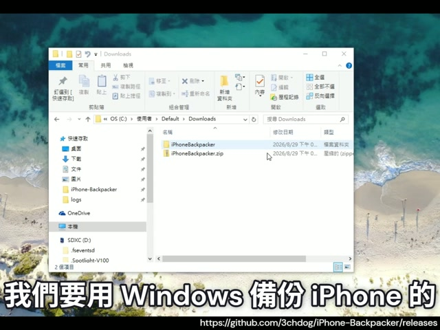
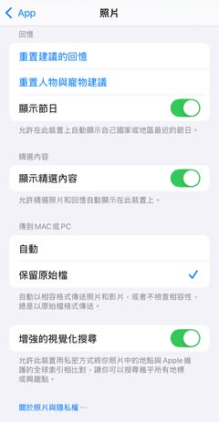
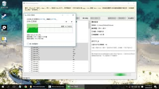

Threads｜3chdog：iPhone-Backpacker，Windows 快速備份 iPhone 照片到硬碟的開源小工具
一句話摘要
Threads 貼文介紹 3chdog 開源的 iPhone-Backpacker：一個給 Windows 使用者備份 iPhone 照片／影片到硬碟的免安裝小工具，可偵測 iPhone 相片資料夾、勾選後批次複製，解決 Windows 手動打開 DCIM 子資料夾又慢又容易失敗的痛點。
來源脈絡
- 來源：Threads「張朝荃（@3chdog）」貼文。
- 分享連結：https://www.threads.com/share/BBgO4vWPSk/
- Canonical：https://www.threads.com/@3chdog/post/DcoEQzIE_-E
- GitHub Repo：https://github.com/3chdog/iPhone-Backpacker
- Releases：https://github.com/3chdog/iPhone-Backpacker/releases/
- 最新 release：v1.0.1 — 修正裝置偵測失效，發布於 2026-08-29。
- 最新壓縮檔：iPhoneBackpacker_v1.0.1.zip，大小約 45.99 MB。
- GitHub repo 描述：以 Python 協助 Windows 使用者自動從 iPhone 複製影像，降低手動複製的麻煩。
- 可見互動數：約 1.2 萬次瀏覽、168 讚、17 回覆、26 轉發、285 分享。
原貼重點
用 Windows 來備份 iPhone 超慢！
雲端也是不錯，但我就是個數位倉鼠
想把東西都存在硬碟
但每次開資料夾都要等很久
我甚至要一個資料夾一個資料夾
點開來複製到我的隨身硬碟
有時候還會複製失敗
Windows 跟 iPhone 的相性太差了
我寫了個程式
終於可以快速查看
有幾個 iPhone 相片資料夾
之後只要勾選放著給它跑就好
給大家參考：
https://github.com/3chdog/iPhone-Backpacker/releases/
只需要下載網頁最下面的 iPhoneBackpacker.zip，解壓縮就可以執行，不需要安裝。
工具用途
- 目標使用者：想把 iPhone 照片／影片備份到本機硬碟、外接硬碟，而不是只依賴雲端同步的人。
- 解決痛點：Windows 存取 iPhone DCIM / 相片資料夾時常載入很慢、需要逐層點開、手動複製容易中斷。
- 操作概念：偵測 iPhone 內有多少相片資料夾，讓使用者勾選後批次複製。
- 安裝方式：作者說明下載 release 頁面底部的 iPhoneBackpacker zip，解壓縮即可執行，不需要安裝。
欒帥可用情境
- 教學或工作坊：示範「從個人痛點寫一個小工具，再用 GitHub release 分享」的完整路徑。
- 數位整理：給需要把 iPhone 大量照片搬到 Windows／外接硬碟的使用者參考。
- 開源工具案例：小型 Python GUI / Windows 工具如何透過 Threads 取得早期使用者回饋。
- 備份提醒：iCloud 照片偏同步，不等於外部離線備份；本工具適合補上本機副本。
使用前注意
- 目前作者在留言中提到：建議 Windows 10 以上；不支援 Windows 7 / 8。
- 若連不到手機，需先確認 Windows「本機／我的電腦」是否看得到 Apple iPhone 裝置。
- iPad 是否可用作者未完全實測；理論上若 Windows 能讀到照片／影片，可能可嘗試。
- 下載任何第三方執行檔前，建議先確認 GitHub repo、release 來源、檔案雜湊與防毒掃描。
GitHub 快照
- Repo：3chdog/iPhone-Backpacker
- 語言：Python
- Stars：3
- Forks：2
- 最新更新：2026-08-31T01:44:26Z
- License：GitHub API 未回傳授權資訊
示例圖封存



原始連結
Threads 分享連結：
https://www.threads.com/share/BBgO4vWPSk/
Threads canonical：
https://www.threads.com/@3chdog/post/DcoEQzIE_-E
GitHub release：